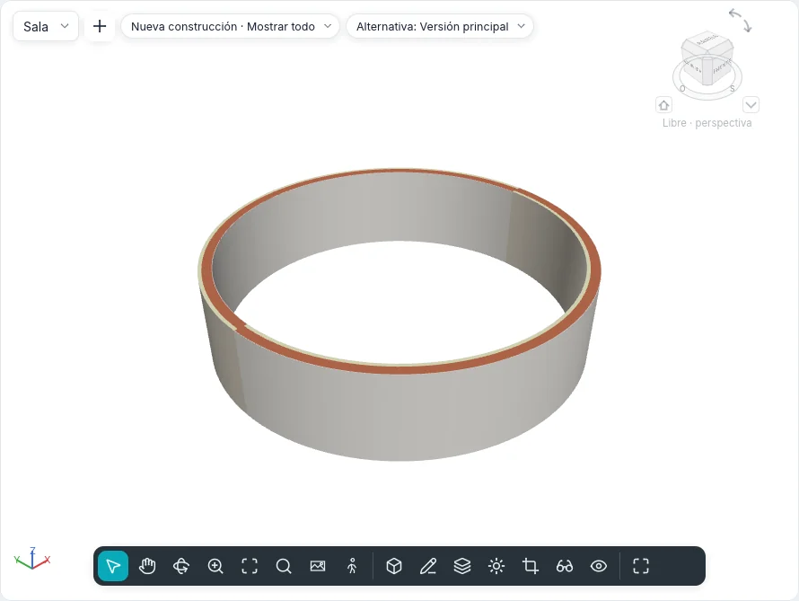

Falsos techos y columnas
Los falsos techos se hacen en una planta de falsos techos, la vista que mira hacia arriba desde su plano de corte. Las columnas y los pilares estructurales se colocan con un clic, en las plantas y en las vistas 3D.

Falsos techos
Modelar ▸ Construir ▸ Falso techo funciona en una planta de falsos techos. Iniciado en otra vista, Ir a vista ofrece las plantas de falsos techos del proyecto: la herramienta nunca cambia la vista por sí sola.
La tarjeta contextual Colocar falso techo tiene el grupo Falso techo:
| Herramienta | Cómo funciona |
|---|---|
| Falso techo automático | La predeterminada. Lleva el cursor dentro de una habitación cerrada por muros: la región se ilumina; un clic crea allí el falso techo. Su contorno sigue las caras de los muros; las líneas de separación de habitación no delimitan un falso techo |
| Dibujar falso techo | Abre el modo boceto (Crear contorno de falso techo), con el grupo Dibujar de los suelos: líneas, rectángulos, polígonos, arcos verdaderos, Designar muros, Seleccionar líneas y Flecha de pendiente. Un bucle cerrado dentro del contorno es una abertura. Finalizar modo de edición crea el falso techo |
La barra de opciones fija el Desfase de altura desde el nivel del próximo falso techo (2,60 m en un proyecto nuevo) y si tiene Delimitación de habitación.
Un falso techo seleccionado muestra Editar contorno, que vuelve a abrir su boceto.
Tipos
El selector de tipos lista dos grupos:
- Falso techo simple: sin grosor, solo su material, cuyo patrón se dibuja en él (Genérico);
- Falso techo compuesto: capas de arriba abajo, editadas en Capas del tipo como las de muros y suelos (Placa de yeso 12,5 sobre perfilería, Paneles 600 × 600). Su capa inferior es lo que se ve desde abajo.
La rejilla del falso techo
El patrón de modelo del material visto desde abajo es la rejilla del falso techo: Panel mineral
600x600 tiene una rejilla de 600 × 600. Se dibuja en la planta de falsos techos y en las vistas
3D, y la rejilla de un falso techo nuevo está centrada en su contorno, de modo que los paneles de
borde de lados opuestos son iguales. El comando ceilinggrid desplaza la rejilla (origin, by),
la gira (angle) o la vuelve a centrar (centre).
Propiedades
| Propiedad | Significado |
|---|---|
| Nivel | El nivel al que pertenece el falso techo |
| Desfase de altura desde el nivel | La altura de su cara inferior sobre el nivel |
| Delimitación de habitación | Si las habitaciones de debajo terminan en el falso techo |
| Pendiente | La pendiente, para un falso techo inclinado por una línea o una flecha |
| Grosor, Perímetro, Área, Volumen | De solo lectura |
Plantas de falsos techos
Una planta de falsos techos muestra el nivel desde abajo, en el mismo sentido que su plano de planta para que los dos se superpongan: los muros, columnas y muros cortina que su plano de corte encuentra (2,30 m, sobre puertas y ventanas, así que un muro está entero encima de ellas), los falsos techos con sus rejillas, las rejillas y las anotaciones propias de la vista.
- Vistas ▸ Crear ▸ Planta ▾ ▸ Planta de falsos techos abre Nueva planta con el Tipo de las plantas de falsos techos: elige los niveles; con No duplicar vistas existentes no se ofrece un nivel que ya tiene una.
- Un nivel nuevo recibe su planta de falsos techos cuando Plano de techo está marcado en Tipos de vista de planta, en la barra de opciones de Nivel.
- En el Índice del proyecto las plantas de falsos techos tienen su propia rama, Plantas de falsos techos. Una planta de falsos techos lleva el nombre de su nivel; el título de su ventana, y la línea de comandos, la llaman Planta de falsos techos: Planta baja.
En los planos de planta los falsos techos no se dibujan: están por encima del plano de corte. En
las secciones se cortan con sus capas; en las vistas 3D son sólidos, uno por capa. Los muros pueden
unirse a la cara inferior de un falso techo con Unir arriba/abajo. Los falsos techos aparecen en
las tablas y en los cómputos de materiales, y se exportan a IFC como IfcCovering de tipo
CEILING.
Columnas y pilares estructurales
Modelar ▸ Construir ▸ Columna ▾ ofrece Columna arquitectónica y Pilar estructural; Estructura ▸ Elementos estructurales ▸ Pilar estructural inicia directamente el segundo. Ambos funcionan en las plantas y en las vistas 3D (sobre el nivel bajo el cursor).
- Un clic la coloca. Sus cotas temporales miden hasta las referencias más cercanas; escribe un valor para colocarla a esa distancia.
- La barra espaciadora la alinea con las rejillas que se cruzan bajo el cursor, o la gira 90°.
- La barra de opciones: Girar tras insertar (queda entonces seleccionada y se gira con Girar), Altura o Profundidad, el nivel que alcanza o Sin conexión con una altura, y Delimitación de habitación.
Un pilar estructural va también a varios sitios a la vez, desde el grupo Varios:
- En rejillas: haz clic en las rejillas (otra vez para dejar una fuera); un pilar espera en cada una de sus intersecciones; Fin o Enter los coloca;
- En columnas: haz clic en las columnas arquitectónicas; uno va al centro de cada una.
Un pilar estructural colocado sobre dos rejillas toma de ellas su Marca de ubicación del pilar (A-2) y, con Se desplaza con las rejillas, las sigue cuando se mueven.
Cómo se dibujan
- En las plantas una columna cortada por el plano de corte se rellena como un elemento cortado: con el patrón de corte de su material, o con el patrón de nivel de detalle bajo de su tipo. Un pilar estructural conserva todo su contorno; una columna arquitectónica dentro de un muro se funde con él, y su contorno solo se ve donde sobresale del muro.
- Bajo el plano de corte una columna se dibuja en proyección.
- En las vistas 3D una columna circular es lisa, sin líneas a lo largo de su costado.
- Una columna con Delimitación de habitación hace una isla en la habitación que la rodea, o un entrante donde se apoya contra un muro.
Unir arriba/abajo y Separar arriba/abajo, con columnas seleccionadas, unen su parte superior a un suelo, cubierta, falso techo o plano de referencia de arriba, o su base a un suelo de abajo, como para los muros.
Con pilares seleccionados la barra de opciones muestra Unir pilar: con Superior o Base, y tres opciones: Estilo de unión (Cortar pilar: el pilar se detiene en la cara del elemento y sigue su pendiente; Cortar destino: el pilar queda plano y una cubierta o suelo que atraviesa por completo pierde su sección; No cortar: se solapan), Justificación de unión (Intersección mínima, Intersecar eje del pilar, Intersección máxima: donde la sección encuentra un elemento inclinado) y Desfase desde la unión (hacia arriba si es positivo). En Propiedades, bajo Restricciones, Justificación superior, Desfase de unión superior, Justificación en la base y Desfase de unión en la base se modifican mientras ese extremo está unido. Separar arriba/abajo y un clic en el elemento separan solo de él; Desenlazar todo de todos.
Un pilar arquitectónico colocado en un muro o contra su cara se une al muro: lo llena el material del núcleo del muro, las capas fuera del núcleo lo envuelven por los lados que sobresalen, no hay línea entre ellos y, con nivel de detalle bajo, toma el patrón grueso del muro; en la esquina de dos muros se une al que más solapa. Un pilar estructural conserva siempre su propio material y corta el muro en el que está: el muro pierde su sección en planta, sección y 3D (solo en la altura del pilar), y el área y el volumen del muro, también en las tablas, disminuyen. Al mover el muro o el pilar la unión se recalcula.
Tipos
Las columnas tienen nuestras propias secciones paramétricas, rectangulares (Anchura y
Profundidad; para un pilar estructural b y h) o circulares (Diámetro), con un
material: Columna rectangular 400 × 400, Columna circular Ø 300, Pilar de hormigón armado
300 × 300, 300 × 500 y Pilar circular de hormigón armado Ø 400. Las columnas y los pilares
estructurales se exportan a IFC como IfcColumn.